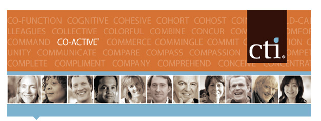

|
 |
||||||
| Back by popular demand |
|
Prerequisites: |
||||
|
Atlanta, GA | Intermediate Series Fullfillment, Balance, Process, Synergy |
||||||
Co-active® Coaching integrates three foundational principles that together serve to enhance the quality and results experienced in the
coaching client’s life and work.
Co-active® Coach training allows people to take relationships and conversations to a completely different level. You will learn the skills to successfully coach individuals toward their goals, through establishing authentic relationship using the Co-active® method. |
||||||
|
Learn more about CTI by visiting www.thecoaches.com |
||||||